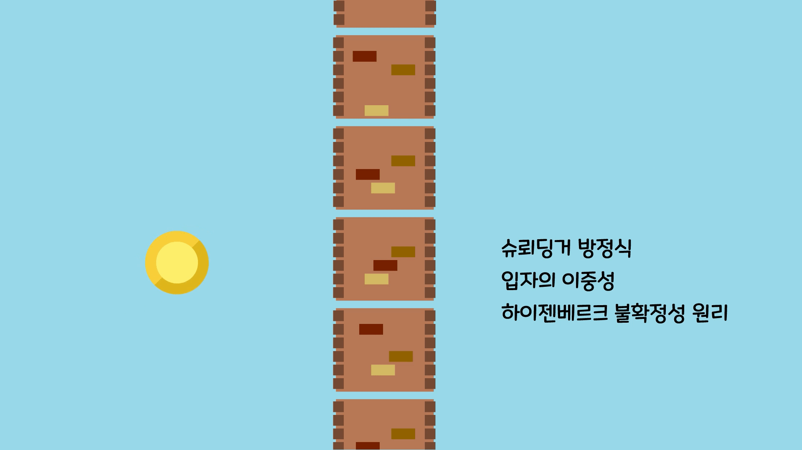

- Background Knowledge
- What is Quantum Tunneling?
The Probability of Tunneling
다른 예시를 들어볼까요

다음 그림을 보면 공의 일부는 벽을 통과하고 일부는 반사되어 튕겨 나오는데요.
양자역학에서의 중요한 성질들을 이용하여 양자역학에서 가장 중요한 방정식인 슈뢰딩거 방정식을 풀면 확률이 0인 해가 존재할 수 없다는 결론이 나옵니다.
따라서 벽의 반대쪽에 반드시 양자의 일부가 있어야 하고, 양자가 터널을 넘어가는 것처럼 보여 이를 양자 터널링이라 하는 것입니다.